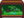
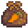
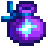

Riesiger Baumstumpf
| Riesiger Baumstumpf | |
 | |
 | |
| Adresse: | Zundersaftwald, westlich von Marnies Ranch |
| Bewohner: | |
Der Großen Baumstumpf befindet sich im nördlichen Bereich des Zundersaftwaldes westlich von Marnies Ranch.
Es beginnt als riesiger Baum ohne nennenswerte Eigenschaften. Er wird zum Riesenstumpf, nachdem ein starker Windsturm den Baum gefällt hat. Durch die Interaktion mit dem Baumstumpf wird die Auftragsreihe "Der riesige Baumstumpf" gestartet. Später wird es zum Zuhause eines Waschbären, der, je mehr seiner Aufträge der Spieler erfüllt, seine Frau und Kindern dazu holt.
Auftragsreihe
'Hinweis: Nach dem Auftrag "Der Riesige Stumpf" ist der Rest kein echter "Auftrag", da es sich nicht um einen der aufgezeichneten Aufträge handelt, sonder eher um eine Reihe von interaktiven Anfragen, ähnlich den Anfragen des Müll-Bären.
Vor der Bewohnung
Nachdem das zufälliges Ereignis "Ein heftiger Sturm"] aufgetreten ist, hat der resultierende Baumstumpf ein "?" Dialog, mit dem interagiert werden kann, um den Auftrag "Der Riesige Stumpf" zu starten, in dem der Spieler den Baumstumpf mit 100 Hartholz reparieren muss.
Waschbärenwünsche
Am Tag nach der Reparatur des Baumstumpfes zieht ein Waschbär ein. Anschließend stellt er eine Reihe von Anfragen nach Gegenständen, die jeweils eine Belohnung einbringen. Die angeforderten Gegenstände erfordern häufig die Verwendung verschiedener Handwerksausrüstung, wie zum Beispiel dem Dehydrator, dem Fischräucherer und dem Einmachgefäß. Nach Abschluss einer Anfrage wird nach 7 Tagen eine neue Anfrage gestellt, was durch das Erscheinen seiner Frau (und später der Kinder) angezeigt wird. Das Erledigen von 9 Anfragen bringt dem Spieler den Erfolg "Gute Nachbarn" ein. Der Spieler kann danach weiterhin zusätzliche Belohnungsanfragen erfüllen. Die angeforderten Artikel beziehen sich normalerweise auf die aktuelle Saison und sind in dieser erhältlich. Wenn in der letzten Woche (Tage 22–28) einer Saison eine Anfrage generiert wird, fragt der Waschbär nach Gegemständen im Zusammenhang mit der folgenden Saison (z. B. wird bei einer am 24. Frühling gestellten Anfrage nach Gegenständen für den Sommer gefragt). .[1]
Erster Wunsch
| Erster Wunsch | ||
|---|---|---|
| Krabenreusenfänge (5): Venusmuschel, Herzmuschel, Flusskrebs, Miesmuschel, Auster, Strandschnecke, or Schnecke | ||
Geräucherter Fisch (1):
| ||
| 25 Samen (siehe Hinweis): Karottensamen, Sommerkürbis-Samen, Brokkoli-Samen oder Pulvermelonen Samen | ||
Alle 7 Krabbenreusen-Fische werden mit gleicher Wahrscheinlichkeit ausgewählt (zu allen Jahreszeiten).
Im Herbst ist die Wahrscheinlichkeit, dass Lachs ausgewählt wird, doppelt so hoch wie bei den übrigen Fischen, die sonst alle gleich wahrscheinlich sind. Im Frühling, Sommer und Winter werden alle Fische mit gleicher Wahrscheinlichkeit ausgewählt.
Zweiter Wunsch
| Zweiter Wunsch | ||
|---|---|---|
Trockenfrüchte (1):
| ||
Gelee (1):
| ||
Im Winter werden Kristallfrucht und Pulvermelone doppelt so häufig ausgewählt wie Kaktusfrucht oder Kokosnuss, die gleich wahrscheinlich sind. Im Frühling, Sommer und Herbst werden alle Früchte mit gleicher Wahrscheinlichkeit ausgewählt.
Dritter Wunsch
| Dritter Wunsch | |||
|---|---|---|---|
| Getrocknete Pilze (1): | |||
Eines der folgenden:
| |||
Vierter Wunsch
| Vierter Wunsch | |||
|---|---|---|---|
Eingelegtes (1):
| |||
Saft (1):
| |||
Karotte, Sommerkürbis und Brokkoli werden doppelt so häufig ausgewählt wie die anderen Gemüsesorten ihrer jeweiligen Jahreszeit, die ansonsten mit gleicher Wahrscheinlichkeit ausgewählt werden. Im Winter werden alle Gemüsesorten mit gleicher Wahrscheinlichkeit ausgewählt.
Fünfter Wunsch
| Fünfter Wunsch (2 zufällige Gegenstände) | ||
|---|---|---|
|  Dschungel Tank (1) | ||
Sechster Wunsch und Darüber Hinaus
| Sechster Wunsch und Darüber Hinaus | |||
|---|---|---|---|
| Die Anforderungen entsprechen zufällig ausgewählt einer der ersten fünf Wünsche. | |||
Eines von (zufällig):
| |||
Hinweis
Bei der ersten Anfrage hängt der belohnte Samen von der Saison und dem Datum ab, an dem der Spieler die Anfrage abschließt. Dies gilt auch für die mögliche Samenbelohnung ab der sechsten Anfrage.
| Von | Bis | Saat | Beschreibung |
|---|---|---|---|
| Im Frühjahr pflanzen. Braucht 3 Tage zum Wachsen. | |||
| Im Sommer pflanzen. Es dauert 6 Tage bis zur Reife und produziert auch nach der ersten Ernte weiter. | |||
| Im Herbst pflanzen. Es dauert 8 Tage bis zur Reife und produziert auch nach der ersten Ernte weiter. | |||
| Diese besondere Melone wächst im Winter. Es dauert 7 Tage bis zur Reife. |
Laden der Waschbärenfrau
Nachdem die erste Anfrage des Waschbären erfüllt wurde, kann mit Waschbärenfrau interagiert werden, um Zugang zu ihrem Shop zu erhalten. Dort wird kein Gold verwendet, sondern Gegenstände getauscht.
Ihr Shop bietet zunächst alle Samen von Saatflecken an, aber alle Artikel, die man als Belohnung aus den ersten 5 Anfragen erhält, werden nach Abschluss auch diesem Shop hinzugefügt.
| Image | Name | Description | Price | Requirement |
|---|---|---|---|---|
| Waschbärtagebuch | Unkraut hat eine höhere Chance, gemischte Saat zu bilden. | 2. Wunsch erfüllt | ||
| Mahagoni-Samen | Platziere dies auf deiner Farm, um einen Mahagonibaum zu pflanzen. | 4. Wunsch erfüllt | ||
| Waschbärenhut | Ein klassischer Hut aus Zeiten des wilden Westens. | 3. Wunsch erfüllt | ||
|  | Karottensamen | Im Frühjahr pflanzen. Braucht 3 Tage zum Wachsen. | N/A | |
| Sommerkürbis-Samen | Im Sommer pflanzen. Es dauert 6 Tage bis zur Reife und produziert auch nach der ersten Ernte weiter. | N/A | ||
| Brokkoli-Samen | Im Herbst pflanzen. Es dauert 8 Tage bis zur Reife und produziert auch nach der ersten Ernte weiter. | N/A | ||
| Pulvermelonen Samen | Diese besondere Melone wächst im Winter. Es dauert 7 Tage bis zur Reife. | N/A | ||
| Gemischte Saat | Hier ist ein wenig von allem drin. Pflanze sie ein und lass dich überraschen! | 4. Wunsch erfüllt | ||
|  | Feenstaub | Sprenkel auf Fässer, Öfen und andere Raffinerieausrüstung, damit sie ihr Produkt sofort erhalten. | 6. Wunsch erfüllt | |
| Dschungel Tank | Kann in deinem Haus platziert werden. | 5. Wunsch erfüllt | ||
| Goldene Mysteriöse Kiste | Ein Schmied kann das für dich öffnen. Wer weiß, was darin sein könnte? | 6. Wunsch erfüllt; Meisterung des Sammelns erlangt | ||
| Magischer Bonbon | Ein seltenes und kraftvolles Bonbon, das mit der Essenz des prismatischen Splitters angereichert ist. | 6. Wunsch erfüllt; Meisterung des Sammelns erlangt |
Referenzen
- ↑ Siehe Raccoon::_activateMrRaccoon im Spielcode.
Geschichte
- 1.6: Eingeführt.
- 1.6.3: Anzahl der geforderten Fledermausflügel und Käferfleisch wurde von 10 auf 20 erhöht.
- 1.6.4: Handel mit Mysteriöse Kiste und Goldene Mysteriöse Kiste hinzugefügt. Die Belohnung aus der Waschbären Mysteriöse Kiste wurde von 4 auf 5 erhöht. Es wurde eine spezielle Zwischensequenz hinzugefügt, nachdem die Waschbären die maximale Familiengröße erreicht haben. Fehler im Mehrspieler behoben, bei dem es nur dem ersten Spieler möglich war, den Baumstumpf zu reparieren, den Auftrag "Der riesige Baumstumpf" abzuschließen, was andere Spieler am Fortschritt hinderte.
- 1.6.6: Kohle für den Handel mit Mahagoni-Samen hinzugefügt. Es wurde ein Fehler behoben, durch den der Waschbär während der Waschbär-Zwischensequenz im Mehrspielermodus verschwindet.
- 1.6.9: Es wurde ein Fehler behoben, durch den das Waschbärenbündel jede Variation der angeforderten Handwerkswaren akzeptierte.
| Gebäude | ||
|---|---|---|
| Händler | Abenteurergilde • Anglerbedarf • Bruchbude • Buchhändler • Eisstand • Geheimes Walnusszimmer von Mr. Qi • Inselhändler • Joja-Markt • Kasino • Klinik • Kneipe • Marnies Ranch • Oase • Pierres Gemischtwarenladen • Reisewagen • Schmied • Schreinerladen • Turm des Zauberers • Vulkanzwerg • Wüstenhändler | |
| Häuser | Bauernhaus • Baumhaus • Bergstraße 24 • Elliotts Hütte • Flussstraße 1 • Flussstraße 2 • Haus des Bürgermeisters • Insel-Farmhaus • Leahs Hütte • Weidengasse 1 • Weidengasse 2 • Wohnwagen • Zelt | |
| Bauernhof Gebäude | Bauernhof | Brunnen • Fischteich • Gewächshaus • Hühnerstall • Hütte • Mühle • Pferdestall • Schleim-Stall • Schuppen • Silo • Stall |
| Spezial | Erdobelisk • Goldene Uhr • Hof-Obelisk • Insel-Obelisk • Junimo-Hütte • Wasserobelisk • Wüsten Obelisk | |
| andere Gebäude | Gemeinschaftszentrum • Hexenhütte • Hundehütte • Insel-Außenstelle • Joja-Warenhaus • Kanalisation • Kino • Museum • Spa | |